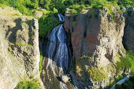

Водопад Джермука
Высота: 68 метров
Лучшее время для посещения: Круглый год
Второй по высоте водопад Армении, расположенный в живописном ущелье реки Арпа. Особенно впечатляюще выглядит зимой, когда замерзает и превращается в гигантскую ледяную скульптуру. Вокруг водопада проложены пешеходные тропы и смотровые площадки.
Отзывы

Минеральные источники Джермука
Температура воды: 30-64°C
Лечебные свойства: Заболевания ЖКТ, нервной системы и опорно-двигательного аппарата
Лечебные воды Джермука известны с древних времен. Сегодня здесь работает современный бальнеологический курорт с десятками источников разной температуры и минерализации.